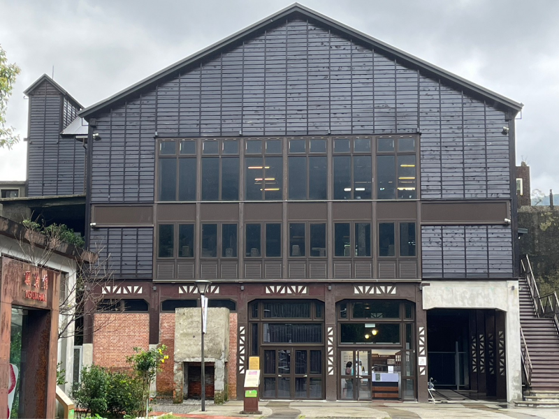
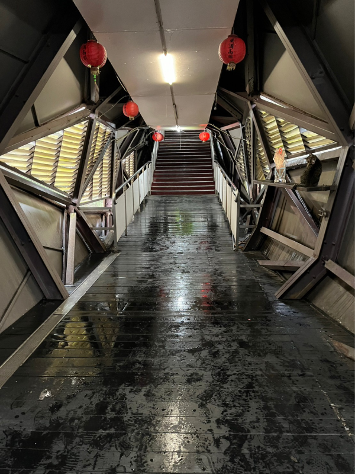

猴硐煤礦博物園區
願景館 (原 瑞三選煤廠倉庫)
園區內的願景館的前身為瑞三鑛業整煤廠
倉庫。介紹煤礦產業相關的人事物，以文
字及影像呈現猴硐地區的特色。
館內不僅有圖像及文字來訴說猴硐煤礦的歷
史故事，更有許多精緻生動的立體模型供大
家觀賞，彷彿真的回到了當時的 風光，前面
介紹的地方也有按鈕，讓民眾了解各種設施
的名 字和位置。
原瑞三選煤廠倉庫的願景館，還保留了大量的
煤礦，讓旅客觀賞。
當年採煤鼎盛時活動人口達到兩萬五千餘人，
可以想像過去百業興隆的景況

猴硐煤礦博物園區
瑞三礦業整煤廠
猴硐瑞三整煤廠是平溪線上重要的文史據點，也
代表著北臺灣礦業文化極為重要的一環，往昔猴
硐的礦工們為了討生活留下非常多辛苦感人的故
事，也刻印在整煤廠殘存的遺跡之中，歷時3年時
光，終於從傾頹荒廢的廢墟到今日重新展示在市
民眼前的博物館。
侯友宜二零二二年七月二日視察歷史建築，瑞芳
瑞三選煤廠的修復情形，建築師徐裕健及大木匠
師賴麒麟表示，修復材料大量使用日治時代的檜
木與杉木，恢復舊時的風貌，並整理出珍貴機
具、重要文史。
瑞三鑛業整煤廠內部規劃礦業文史展可從不同主
軸及角度一覽猴硐地區礦工韌命故事，並導入多
媒體影像展示及聲光互動科技，為民眾帶來更有
趣、更貼近生活的煤礦業文史體驗。
猴硐貓村
貓橋
隨著居民反映陸橋老舊狹窄的聲浪，新北市政府決定改建，
自2012年起開始規劃「猴硐火車站跨越貓村陸橋」的改建工
程案，並參考當地居民的建議，融入貓村特色，同時結合當
地煤礦、貓及隧道意象，打造造型獨特的「貓橋」，橋內有
貓足跡、照片、插畫，還設計專供貓通行、跳躍的跳台。於
2013年獲得公共工程金質獎肯定。
猴硐貓村各個角落都有一些可愛的公仔
及壁畫，非常適合拍照留影，是親子遊
憩的好地方。
貓咪比人還多的村莊，貓在哪裡都隨處
可見，不管是民眾的家裡，或是屋頂上
都有牠們的行蹤。
以前貓村是規定不能餵食的，現在已經
開放餵食了，但是鼓勵餵食肉泥，不建
議餵食罐頭，根據店家的說法這樣比較
乾淨衛生，不會互相傳染唾液，而餵食
完畢記得把垃圾帶走，才有公德心喔。